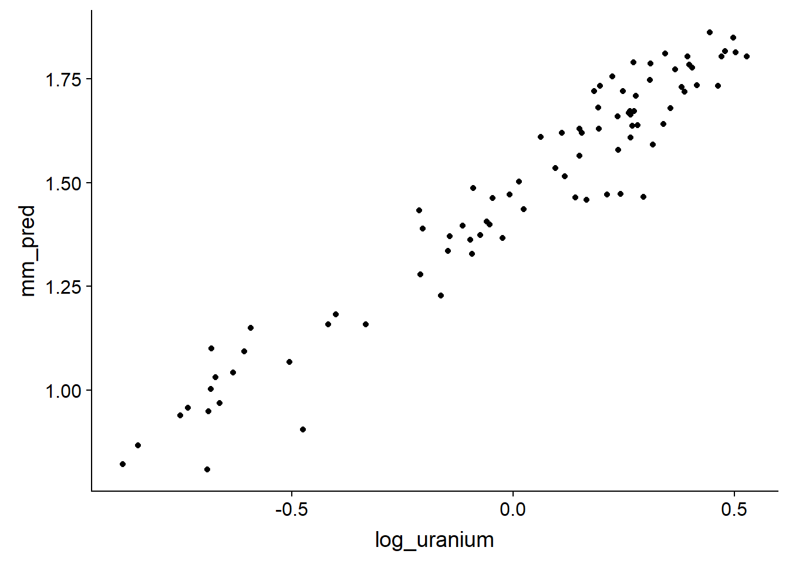
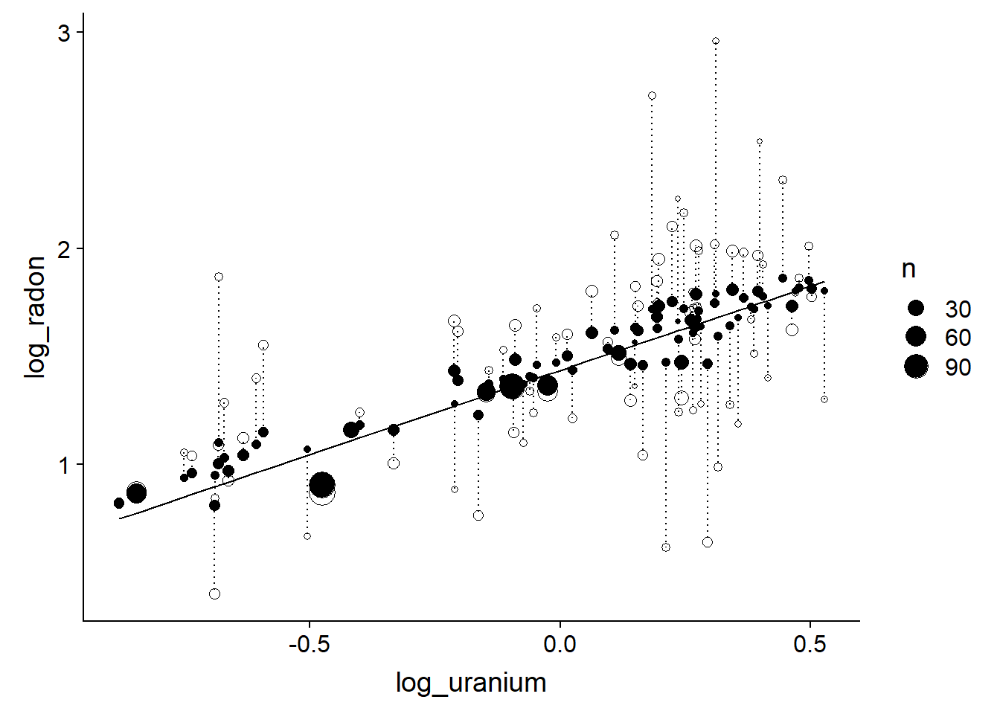

Linear mixed models, part 2
November 25, 2019
Review
In the last class, we saw different ways of treating grouped data in the context of a “classical” linear regression: ignore groups, estimate effects separately for each group, or indirectly account for groups based on group-level predictors.
On the one hand, ignoring the grouped data structure can lead to an overestimate of the precision of the inferences, since the significance tests and confidence intervals of the linear regression are based on the assumption that the residuals are all independent; this is not the case when the residuals of the same group are correlated.
On the other hand, estimating fixed effects for each group may lead to overestimation of differences between groups, especially when there are few observations per group; in this case, a large part of the observed differences is due to random sampling.
This discussion led us to consider linear mixed models to represent this type of data.
Unlike linear regression that includes only one random term (individual-level residuals), mixed models include the random variation shared by the observations of the same group.
Mixed models also produce estimates of the regression coefficients for each group, but assuming a normal distribution of these coefficients centered on the average of the groups. Compared to group fixed effects, these coefficients are “shrunk” towards the overall average. This allows for more reliable estimates even with few observations per group.
Objectives
Understand how mixed models deal with unbalanced groups.
Make predictions from a linear mixed model.
Create models with the random effect of several variables and the random effect of a variable on more than one coefficient.
Apply model selection with AIC to mixed models.
Mixed models for unbalanced groups
In the examples seen in the last class and lab, the number of observations was balanced between the groups. Mixed models also have interesting properties for cases where groups do not contain the same number of observations, as we will see in the next example.
Example: House radon concentration in Minnesota
The dataset radon.csv, from the textbook by Gelman and Hill, contains radon concentration measurements (log_radon, on a logarithmic scale) from 919 houses in 85 counties (county) of the American state of Minnesota. The number of houses sampled per county ranges from 1 to 116. This dataset includes a house-level predictor, the floor where the measurement was taken (with 0 = basement and 1 = ground floor), and a county-level predictor, the soil uranium level (also on a logarithmic scale).
radon <- read.csv("../donnees/radon.csv")
head(radon)## county floor log_uranium log_radon
## 1 AITKIN 1 -0.6890476 0.7884574
## 2 AITKIN 0 -0.6890476 0.7884574
## 3 AITKIN 0 -0.6890476 1.0647107
## 4 AITKIN 0 -0.6890476 0.0000000
## 5 ANOKA 0 -0.8473129 1.1314021
## 6 ANOKA 0 -0.8473129 0.9162907We estimate the parameters of a mixed model with fixed effects of the floor and uranium level, as well as a random variation of the intercept by county.
library(lme4)
mm_radon <- lmer(log_radon ~ floor + log_uranium + (1 | county), radon)
summary(mm_radon)## Linear mixed model fit by REML ['lmerMod']
## Formula: log_radon ~ floor + log_uranium + (1 | county)
## Data: radon
##
## REML criterion at convergence: 2134.2
##
## Scaled residuals:
## Min 1Q Median 3Q Max
## -4.9673 -0.6117 0.0274 0.6555 3.3848
##
## Random effects:
## Groups Name Variance Std.Dev.
## county (Intercept) 0.02446 0.1564
## Residual 0.57523 0.7584
## Number of obs: 919, groups: county, 85
##
## Fixed effects:
## Estimate Std. Error t value
## (Intercept) 1.46576 0.03794 38.633
## floor -0.66824 0.06880 -9.713
## log_uranium 0.72027 0.09176 7.849
##
## Correlation of Fixed Effects:
## (Intr) floor
## floor -0.357
## log_uranium 0.145 -0.009How can fixed effects be interpreted in this model?
(Intercept)is the mean oflog_radoniffloor= 0 (i.e. in a basement) andlog_uranium= 0.flooris the difference oflog_radoniffloorincreases by 1 (i.e. ground floor compared to the basement).log_uraniumis the effect of an increase of one unit oflog_uraniumonlog_radon. In the particular case where the two variables are on a logarithmic scale, this coefficient can be interpreted as a multiplicative effect: a 1% increase in the concentration of uranium in the soil increases the concentration of radon in homes by 0.72%.
Now let’s use the model to predict log_radon for a basement in each county. First, we extract the county name, the uranium concentration and the number of houses per county (that number will be useful later).
comtes <- group_by(radon, county, log_uranium) %>%
summarize(n = n()) %>%
ungroup()Here is the graph of county-level predicted values:
comtes$floor <- 0 # basement
comtes$mm_pred <- predict(mm_radon, comtes)
ggplot(comtes, aes(x = log_uranium, y = mm_pred)) +
geom_point()
These predictions deviate from the mean linear trend based on the estimated intercepts for each county (random effects).
Let’s now compare these predictions to those of two classical linear regressions, one with no county effect or one with fixed effects for each county.
lm_radon1 <- lm(log_radon ~ floor + log_uranium, radon)
lm_radon2 <- lm(log_radon ~ floor + log_uranium + county, radon)
comtes <- mutate(comtes, pred1 = predict(lm_radon1, comtes),
pred2 = predict(lm_radon2, comtes))
ggplot(comtes, aes(x = log_uranium)) +
labs(y = "log_radon") +
geom_line(aes(y = pred1)) +
geom_point(aes(y = pred2), shape = 1) +
geom_point(aes(y = mm_pred))
The line represents the prediction of the model ignorning the county, the filled points indicate the county effects of the mixed model, and the hollow points indicate the fixed effects by county. The predictions of the mixed model are closer to the mean trend, showing the shrinkage of the coefficients for the mixed model.
Now let’s look at the effect of the \(n\), the sample size in each county. For clarity, the two predictions of the same county are connected by a dotted line.
ggplot(comtes, aes(x = log_uranium)) +
labs(y = "log_radon") +
geom_line(aes(y = pred1)) +
geom_point(aes(y = pred2, size = n), shape = 1) +
geom_point(aes(y = mm_pred, size = n)) +
geom_segment(aes(xend = log_uranium, y = mm_pred, yend = pred2),
linetype = "dotted")
This result shows that the smaller the sample size in a county, the more its effect is shrunk towards the mean. In other words, the fewer points in a county, the more the deviation observed between that county and the overall trend is likely to be due to random sampling, and the more the mixed model must “correct” this value by bringing it closer to that of the general trend.
Predictions from a mixed model
At the last class, we saw the following representation for a mixed model with predictors measured at the individual level (observation \(k\)) and at the group level (group \(j\)), as well as an intercept that varies randomly between groups.
\[ y_k = \gamma_0 + \gamma_1 u_{1j[k]} + \beta_1 x_{1k} + \nu_{j[k]} + \epsilon_k \]
In our previous example, the value of \(y_k\) is the sum of the mean intercept \(\gamma_0\) (the value reported as Intercept by R), the effects of individual-level (\(x_1\): floor) and group-level (\(u_1\): uranium concentration) predictors, the random group effect \(\nu\) and a residual \(\epsilon\).
The fixef function gives us the estimates of \(\gamma_0\), \(\gamma_1\) and \(\beta_1\), whileranef shows the estimated random effects \(\nu_j\).
eff_fixes <- fixef(mm_radon)
eff_fixes## (Intercept) floor log_uranium
## 1.4657628 -0.6682448 0.7202676eff_alea <- ranef(mm_radon)$county
head(eff_alea)## (Intercept)
## AITKIN -0.020642363
## ANOKA 0.011245768
## BECKER 0.012422028
## BELTRAMI 0.111128436
## BENTON 0.008235846
## BIG STONE -0.026196358Earlier, when we predicted basement radon concentration for each county, the predict function used both fixed and random effects estimates. In other words, the predicted value \(\hat{y}\) for a basement (\(x_1 = 0\)) in county \(j\) is given by:
\[ \hat{y} = \hat{\gamma_0} + \hat{\gamma_1} u_{1j} + \hat{\nu_{j}} \] ,
where the hat symbols mean that we use the estimated values of each coefficient. Therefore we could manually calculate the predictions for each county as follows.
pred_man <- eff_fixes["(Intercept)"] +
eff_fixes["log_uranium"] * comtes$log_uranium + eff_alea$`(Intercept)`
all.equal(pred_man, comtes$mm_pred)## [1] TRUEPredictions for a new group
If we try to predict the basement radon concentration for a group (county) not included in the model, R generates an error.
nouv_comte <- data.frame(county = "NOUVEAU", log_uranium = 0.5, floor = 0)
predict(mm_radon, nouv_comte)## Error in levelfun(r, n, allow.new.levels = allow.new.levels): new levels detected in newdataBy default, the predict function applied to the lmer result tries to use all the random effects. To make a prediction based only on fixed effects, we need to specify the argument re.form = ~ 0.
predict(mm_radon, nouv_comte, re.form = ~0)## 1
## 1.825897We can verify that this prediction was made only based on fixed effects.
eff_fixes["(Intercept)"] + eff_fixes["log_uranium"] * nouv_comte$log_uranium## (Intercept)
## 1.825897With a mixed model, it is therefore possible to make predictions for groups that were not in the original data, by using the prediction of an “average” group (with a group random effect equal to 0). Of course, the uncertainty associated with this prediction is greater than when predicting new observations for an existing group.
The predict function does not provide confidence intervals or prediction intervals for mixed models. These intervals can be estimated by simulating data from the model. These simulation-based methods are not covered in this course, but are part of the course Analyses des données complexes.
Multiple random effects
Example: Growth of spruce on several sites
Consider again the example seen at the beginning of the last class. We want to model the annual growth of white spruce on different sites. For five consecutive years, we measured annual growth of the same 100 trees based on two predictors (\(x_1, x_2\); say the diameter and age) that vary for each observation (tree and year). We also know the value of a predictor (\(u_1\); say the slope) that is fixed at the site level. How could we represent these data with a linear mixed model?
To choose the random effects of the model, we can ask the following question: for which groups of observations would the variation of the response be correlated (between observations of the same group)? In this case:
- observations made on the same tree from one year to the next;
- observations of two trees taken the same year; and
- observations made on trees at the same site
may be correlated. We therefore include three random effects in the model (tree, site and year).
The value of \(y_k\), corresponding to the growth of the tree \(i\) at site \(j\) during the year \(t\), is represented by the model:
\[ y_k = \gamma_0 + \gamma_1 u_{1j[k]} + \beta_1 x_{1k} + \beta_2 x_{2k} + \nu_{j[k]} + \xi_{i[k]} + \tau_{t[k]} + \epsilon_k \]
In R, if slope represents the slope of the site and DBH and age are individual-level predictors, that model could be specified as:
growth ~ slope + DBH + age + (1 | site) + (1 | tree_id) + (1 | year)
From a model structure point of view, two random effects can be either crossed or nested.
The effects of the tree and the year are crossed: each tree is measured for several years and several trees are measured each year. In the same way, the effects of the site and the year are crossed.
The effects of the tree and the site are nested: each tree is associated with one site.
To tell R that effect A is nested in effect B, we use a term like (1 | B / A). In this case, the formula could be rewritten as:
growth ~ slope + DBH + age + (1 | site / tree_id) + (1 | year)
If the tree ID numbers are not repeated from one site to another, it is not necessary to specify the nested effects: the two formulas are equivalent to lmer. However, if the trees were numbered 1, 2, … for each site, it would be necessary to use the formula with the nested effect: otherwise, R would assume that the trees labelled “1” in each site represent the same individual.
Example: Split-plot experiment design
The Oats data frame in the nlme package shows the results of a split-plot agricultural experiment. The experiment is done in six blocks. Each block is divided into three sections where a different variety of oats is sown, then each section is divided into four quadrants which each receive a different concentration of nitrogen (nitro): 0, 0.2, 0.4 or 0.6. The response variable is oat yield for each of the 72 quadrants (6 blocks x 3 varieties x 4 nitrogen concentrations).
library(nlme)
# Change block to an unrdered factor
Oats$Block <- factor(Oats$Block, ordered = FALSE)
head(Oats)## Grouped Data: yield ~ nitro | Block
## Block Variety nitro yield
## 1 I Victory 0.0 111
## 2 I Victory 0.2 130
## 3 I Victory 0.4 157
## 4 I Victory 0.6 174
## 5 I Golden Rain 0.0 117
## 6 I Golden Rain 0.2 114Here is an example of a possible spatial configuration for this experiment. The planted varieties (colors) are randomly assigned to the three sections of each block and the nitrogen concentrations (numbers) are randomly assigned to the quadrants of each section.

The split-plot design is a way of replicating two experimental treatments across several blocks. Its particular feature is that one of the treatments (here, the variety of oats) is applied to a larger surface and another treatment (here, the concentration of nitrogen) is nested within the first.
We can first define a random effect of the block, which represents the fact that the variance of the response is smaller between observations of the same block than between observations of different blocks. This could be due for example to unmeasured environmental gradients in the plot.
mm_oats <- lmer(yield ~ nitro + Variety + (1 | Block), Oats)For the same reason, it is possible that the variance is smaller between quadrants of the same section; we can take into account this second level of grouping by including a random effect of the section (variety) nested in that of the block.
mm_oats2 <- lmer(yield ~ nitro + Variety + (1 | Block / Variety), Oats)
summary(mm_oats2)## Linear mixed model fit by REML ['lmerMod']
## Formula: yield ~ nitro + Variety + (1 | Block/Variety)
## Data: Oats
##
## REML criterion at convergence: 578.9
##
## Scaled residuals:
## Min 1Q Median 3Q Max
## -1.62948 -0.65841 -0.07207 0.55785 1.71463
##
## Random effects:
## Groups Name Variance Std.Dev.
## Variety:Block (Intercept) 108.9 10.44
## Block (Intercept) 214.5 14.65
## Residual 165.6 12.87
## Number of obs: 72, groups: Variety:Block, 18; Block, 6
##
## Fixed effects:
## Estimate Std. Error t value
## (Intercept) 82.400 8.059 10.225
## nitro 73.667 6.781 10.863
## VarietyMarvellous 5.292 7.079 0.748
## VarietyVictory -6.875 7.079 -0.971
##
## Correlation of Fixed Effects:
## (Intr) nitro VrtyMr
## nitro -0.252
## VartyMrvlls -0.439 0.000
## VarityVctry -0.439 0.000 0.500At first glance, it seems contradictory to use the same Variety variable as a fixed effect and as a random effect. However, the random effect does not apply to the differences between the 3 varieties (it would be incorrect to write (1 | Variety)), but rather to the differences between the 18 sections represented by the combinations of a block and of a variety. This is why this random effect is noted as a Variety: Block interaction in the summary.
By looking at the confidence intervals of these two models, we notice that the second gives a wider confidence interval for the fixed effects of the varieties, but a narrower interval for the effect of nitrogen.
confint(mm_oats)## Computing profile confidence intervals ...## 2.5 % 97.5 %
## .sig01 8.126934 29.461033
## .sigma 12.737325 17.936286
## (Intercept) 67.144282 97.655713
## nitro 57.976482 89.356851
## VarietyMarvellous -3.302201 13.885535
## VarietyVictory -15.468868 1.718868confint(mm_oats2)## Computing profile confidence intervals ...## 2.5 % 97.5 %
## .sig01 4.211238 16.580613
## .sig02 5.476922 29.072404
## .sigma 10.674601 15.588813
## (Intercept) 66.501050 98.298960
## nitro 60.261178 87.072155
## VarietyMarvellous -8.458427 19.041762
## VarietyVictory -20.625094 6.875096How can we explain these differences?
In the first model, we assumed that all observations were independent within a block. In the second model, the observations of the same section are correlated, so we do not really have 4 independent replicates of each variety. This increases uncertainty about the effect of varieties.
On the other hand, considering the random effects by section, the residual variance between observations of the same section is reduced. Since the 4 levels of nitrogen concentration are replicated in each section, a smaller residual variance helps to reduce uncertainty about the effect of this predictor.
Mixed model with random slope
Let’s take a look at the rikz dataset seen at the last class, presenting the species richness of 45 intertidal sites across 9 beaches in the Netherlands.
rikz <- read.csv("../donnees/rikz.csv")
# Fix the categorical variables
rikz <- mutate(rikz, Beach = as.factor(Beach),
Exposure = as.factor(Exposure))
# Transform the response
rikz <- mutate(rikz, srich = sqrt(Richness))
head(rikz)## Sample Richness Exposure NAP Beach srich
## 1 1 11 10 0.045 1 3.316625
## 2 2 10 10 -1.036 1 3.162278
## 3 3 13 10 -1.336 1 3.605551
## 4 4 11 10 0.616 1 3.316625
## 5 5 10 10 -0.684 1 3.162278
## 6 6 8 8 1.190 2 2.828427The following model includes a fixed effect of the position of the site relative to the mean sea level (NAP) and a random variation of the intercept between the beaches.
mm_rikz <- lmer(srich ~ NAP + (1 | Beach), rikz)Note: To avoid complicating the model, we ignore the Exposure group-level predictor for now.
We could also consider a case where the effect of the NAP on the response varies from one beach to another. Our model would therefore take the form:
\[ \hat{y_k} = \alpha_{j[k]} + \beta_{j[k]} x_k \] ,
where the intercept and slope of \(y\) vs. \(x\) both vary from group to group. In this case, the mixed model assumes that \(\alpha_j\) and \(\beta_j\) follow a normal distribution with a standard deviation of \(\sigma_\alpha\) and \(\sigma_\beta\), respectively. However, the model does not assume that the two effects are independent. As we saw in the last class, the intercept and slope of a regression can be correlated, so the model also estimates their correlation \(\rho_{\alpha \beta}\).
In R, to represent a random variation of the effect of one of the predictors, we add this predictor on the left part of the random effect term:
mm_rikz2 <- lmer(srich ~ NAP + (1 + NAP | Beach), rikz)
summary(mm_rikz2)## Linear mixed model fit by REML ['lmerMod']
## Formula: srich ~ NAP + (1 + NAP | Beach)
## Data: rikz
##
## REML criterion at convergence: 92.5
##
## Scaled residuals:
## Min 1Q Median 3Q Max
## -1.6245 -0.4430 -0.1095 0.3023 2.1610
##
## Random effects:
## Groups Name Variance Std.Dev. Corr
## Beach (Intercept) 0.4389 0.6625
## NAP 0.1582 0.3978 -0.41
## Residual 0.2159 0.4647
## Number of obs: 45, groups: Beach, 9
##
## Fixed effects:
## Estimate Std. Error t value
## (Intercept) 2.4369 0.2348 10.379
## NAP -0.7026 0.1543 -4.552
##
## Correlation of Fixed Effects:
## (Intr)
## NAP -0.390Here, the correlation between the intercept and the slope random effects is -0.41, as shown in the Corr column of the random effects table. The fixed effect of NAP now represents the mean slope for all beaches.
As before, the coefficients estimated for each beach can be viewed with coef.
coef(mm_rikz2)## $Beach
## (Intercept) NAP
## 1 3.022772 -0.4129461
## 2 3.485563 -0.6702414
## 3 1.840190 -0.5388216
## 4 1.816460 -0.4861710
## 5 3.149914 -1.4983870
## 6 2.067750 -0.4565699
## 7 2.003302 -0.6094925
## 8 2.142433 -0.6761907
## 9 2.404104 -0.9748256
##
## attr(,"class")
## [1] "coef.mer"The following graph shows the variation of prediction lines between beaches for this model. Due to the shrinkage effect, the slope varies less than in the model estimating a fixed effect of the interaction between NAP and beach (see lecture notes for the last class).
rikz$fit2 <- fitted(mm_rikz2)
ggplot(rikz, aes(x = NAP, y = srich, color = Beach)) +
geom_point() +
geom_line(aes(y = fit2))
Model selection
The process of comparing and selecting models is more complex for mixed models, since both fixed and random terms must be chosen.
For example, compare the AICc of the two previous models for species richness vs. NAP in the rikz data: (1) the model with varying intercepts by beach and (2) the model varying intercepts and slopes.
library(AICcmodavg)
aictab(list(mm_rikz = mm_rikz, mm_rikz2 = mm_rikz2))## Warning in aictab.AIClmerMod(list(mm_rikz = mm_rikz, mm_rikz2 = mm_rikz2)):
## Model selection for fixed effects is only appropriate with ML estimation:
## REML (default) should only be used to select random effects for a constant set of fixed effects##
## Model selection based on AICc:
##
## K AICc Delta_AICc AICcWt Cum.Wt Res.LL
## mm_rikz 4 106.15 0.0 0.57 0.57 -48.57
## mm_rikz2 6 106.75 0.6 0.43 1.00 -46.27As we saw in the last lesson, the lmer function estimates the mixed model parameters using the restricted maximum likelihood method (REML), in order to obtain unbiased estimates of the variance parameters. The warning indicates that the AIC(c) calculated on models fit by REML is only valid for the comparison of models with the same fixed effects, but different random effects.
In their manual, Zuur et al. (2009) suggest the following protocol:
First, include all the fixed effects of interest and choose, if necessary, between different versions of the random effects. This step is based on the AIC of models fitted by REML.
Keep the random effects chosen in the previous step and compare different versions of the fixed effects. This step requires comparing the models fitted by maximum likelihood, not by REML (with the
REML = FALSEoption oflmer).Refit the best model by REML to get the final estimates.
This protocol is based on the idea that it is better to simplify the random effects before simplifying the fixed effects, since we are generally more interested in the estimation of the fixed effects.
In our example, suppose that our complete fixed-effects model takes the form srich ~ NAP + Exposure. Let’s first determine whether or not to include the random effect of the beach on the NAP coefficient.
mod_comp <- lmer(srich ~ NAP + Exposure + (1 | Beach), rikz)
mod_comp2 <- lmer(srich ~ NAP + Exposure + (1 + NAP | Beach), rikz)
aictab(list(mod_comp = mod_comp, mod_comp2 = mod_comp2))## Warning in aictab.AIClmerMod(list(mod_comp = mod_comp, mod_comp2 = mod_comp2)):
## Model selection for fixed effects is only appropriate with ML estimation:
## REML (default) should only be used to select random effects for a constant set of fixed effects##
## Model selection based on AICc:
##
## K AICc Delta_AICc AICcWt Cum.Wt Res.LL
## mod_comp 6 100.18 0.0 0.8 0.8 -42.98
## mod_comp2 8 102.98 2.8 0.2 1.0 -41.49We thus choose the first model (random effect on intercept only). Next, compare models with or without the exposure index. Since we compare different fixed effects, we have to refit the models with ML rather than REML.
mod_comp_ml <- lmer(srich ~ NAP + Exposure + (1 | Beach), rikz, REML = FALSE)
mod_nap_ml <- lmer(srich ~ NAP + (1 | Beach), rikz, REML = FALSE)
aictab(list(mod_comp_ml = mod_comp_ml, mod_nap_ml = mod_nap_ml))##
## Model selection based on AICc:
##
## K AICc Delta_AICc AICcWt Cum.Wt LL
## mod_comp_ml 6 92.13 0.0 0.99 0.99 -38.96
## mod_nap_ml 4 101.83 9.7 0.01 1.00 -46.42In conclusion, the best model includes the effect of the NAP and exposure, as well as a random effect of the beach on the intercept.
Fixed or random effect?
Since a different method is required to compare models with different random effects (REML) or with different fixed effects (ML), the AIC cannot be used to determine whether a variable should be considered a fixed or random effect, e.g. we cannot compare srich ~ NAP + Beach with srich ~ NAP + (1 | Beach).
It is therefore necessary to determine a priori which variables constitute fixed or random effects. Here are some guidelines for choosing whether a categorical variable should be included as a random effect:
If the purpose of the model is to estimate the effect of one or more specific treatments on the response, the variable representing these treatments should be a fixed effect.
If the categorical variable has only two levels (binary), it must be considered as a fixed effect. With more than two levels, it is possible to estimate a random effect; however, the smaller the number of levels, the more uncertain the variance estimate between groups, so there is less benefit from using a random effect.
With several groups and few observations in some of these groups, it is better to use a random effect.
If we are less interested in the differences between particular groups, but rather in describing the variation between groups and possibly extending the scope of the model to groups not present in the data, it is preferable to use a random effect.
Finally, there is no harm in including a random effect even if this effect does not explain much of the variance. For example, in the model srich ~ NAP + Exposure + (1 | Beach), there was very little variation between beaches after controlling for the Exposure variable, as indicated by the intra-class correlation of 0.06. The purpose of the random effects is not to detect significant differences between groups, but rather to take into account the hierarchical structure of the variation of the response, in order to obtain better estimates of the fixed effects and their uncertainty.
Summary
Mixed models estimate random effect parameters based on the number of observations per group: the fewer observations per group, the more its effect is shrunk towards the overall average.
To predict a new observation in an existing group, we use the estimated random effect for that group. To predict a new observation in a new group, we use only fixed effects (the effect of an “average” group).
Several random effects can be included in the same model. These effects can be nested or crossed. If the levels of the variable \(A\) are nested in those of the variable \(B\), their random effect is represented by
(1 | B / A)in the model formula.A variable can have a random effect on the intercept and on the coefficient (slope) of an individual predictor. This indicates that the effect of the predictor on the response varies from group to group, similar to an interaction in a classical linear model.
The AIC(c) is a valid measure for the comparison of models with different random effects and the same fixed effects, or with different fixed effects and the same random effects. These models must be adjusted by REML in the first case and by ML (
REML = FALSE) in the second case.
References
Synthesis article on the application of mixed models and model selection in ecology:
- Harrison, X.A., Donaldson, L., Correa-Cano, M.E., Evans, J. Fisher, D.N., Goodwin, C.E.D., Robinson, B.S., Hodgson, D.J., Inger, R. (2018) A brief introduction to mixed effects modelling and multi-model inference in ecology. PeerJ 6: e4794.
Textbooks mentioned at the last class:
Gelman, A. and Hill, J. (2006) Data Analysis Using Regression and Multilevel/Hierarchical Models. Cambridge, Cambridge University Press.
Zuur, A.F., Ieno, E.N., Walker, N.J., Saveliev, A.A., Smith, G.M. (2009) Mixed Effects Models and Extensions in Ecology with R. New York, Springer-Verlag.